自动化测试框架阶段性总结
[TOC]
自动化测试框架
XX公司 白士军
摘要：
在全面深化重点产业数字化转型的背景下，客户需求日益庞杂，软件项目团队不得不持续压缩软件从设计到发布的产品迭代周期。在软件开发的生命周期中，相较于开发阶段，似乎更愿意缩短测试周期，但软件交付的风险将难以避免。为满足项目团队在有限的时间和成本下交付高质量产品的需求，自动化测试应时而生。
本文探讨的是软件自动化测试框架的实现和部署，基于 Python 语言实现，结合 Selenium、Request、Pytest 等框架技术，完成支持 Web 端界面测试和接口测试的测试框架，通过搭建 Jenkins 平台进行持续集成。目前基于该框架实现的测试脚本运行正常，可以解决手工测试效率低、覆盖率低的问题，切实提高软件测试质量。
关键词：自动化测试、Selenium、Request
1 自动化测试概述
1.1 自动化测试的概念
IEEE 对软件测试的定义为：使用手工或者自动化的测试手段来运行或者测定某个系统的过程，其目的在于检验它是否能够满足规定的需求或者是弄清预期结果与实际结果之间的差别[1]。在整个软件产品从设计开始到发布之前，在这个软件的开发周期之内，都需要进行软件测试工作，其目的在于尽可能快地发现软件缺陷。
自动化测试是指利用机器来代替手工劳动的过程，在无人值守的情况下[2]，通过程序控制机器来完成相应的测试工作。自动化测试的目的，就是减少手工测试，将我们的精力从繁琐的重复工作中解放出来，提高效率，进而增强对软件质量的保障。
对于自动化测试，Cohn M 定义了一种三层的金字塔结构[3]，金字塔从下往上分别是单元测试、接口测试和界面测试，该结构形象地描述了在软件测试过程中这三种测试所占的比重。单元测试是代码的根基，占比最大；提供服务的接口只需通过输入输出即可完成测试，稳定易维护；界面测试则因为用户界面的频繁变更导致测试用例维护困难，所以比重最小。Lisa Crispin 针对这一特点，为自动化测试金字塔结构进行补充，增加了手工测试的“帽子”结构[4]，如图 1 所示。
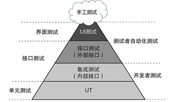
图1 自动化测试分层结构
1.2 自动化测试的原则
由于需求的不断变化，部分测试用例无法复用现成的测试脚本，这要求测试人员需要手动进行测试，而不能把所有的测试工作依赖于自动化测试脚本，因此在进行自动化测试的时候，必须要遵守一定的测试原则[5]，才能使得自动化测试起到预期的测试效果。
(1). 自动化测试用例的范围集中体现在产品比较成熟稳定并且功能重复率比较高的测试上。
在业务流程以及功能比较稳定的产品上，测试用例的重复率较高，因此手工测试耗时很多，自动化测试能明显提高效率。若是初期快速迭代的产品，需求频繁更改，自动化测试需要不断适配新的迭代版本，其本身的开发成本过高，此时追求自动化则是舍本逐末。
(2). 自动化测试用例一般符合正向流程的测试。
在手工测试时，测试人员通常根据需求说明书设计各种场景的测试用例，还要尽可能多地考虑异常情况。自动化测试优先选用正常的场景测试，为每个步骤设定预期结果，其他异常场景需要测试人员手工辅助测试。
(3). 自动化测试不能取代手工测试。
自动化测试脚本在本质上是将测试人员的能力固化下来，它是一种代码形式的测试用例，是测试人员进行需求分析、用例设计之后的产物，主要目的是减少重复繁冗的工作内容，使测试人员将有限的时间更多地投入到探索性测试。
1.3 自动化测试的流程
虽然自动化测试与手工测试的实施手段不同，但同样遵循一定的测试周期。自动化测试通常以系统测试的完成作为启动节点，在可行性分析和需求分析之后制定测试计划，设计测试用例，开发测试脚本，准备测试数据，搭建测试环境，执行测试脚本并收集测试结果。如图 2 所示。
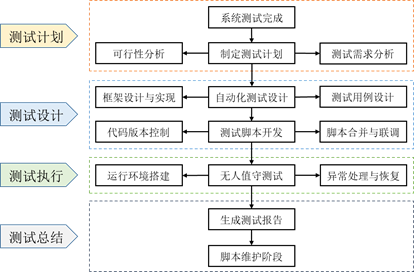
图2 自动化测试流程
2 相关技术介绍
2.1 Selenium框架
Selenium（https://www.selenium.dev/zh-cn/documentation/） 是一个 Web 应用的开源自动化框架。主要应用于 Web 应用程序的自动化测试。通过它，测试工程师可以写出自动化程序，模拟人在浏览器里操作 Web 界面，比如点击界面按钮，在文本框中输入文字等操作。Selenium 支持 Chrome、Firefox、IE、Edge、Safari 等浏览器，支持 Linux、Windows、Mac 系统平台，支持录制、回放与脚本生成。其工作原理如图 3 所示。
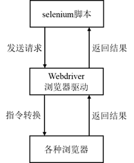
图3 Selenium运行机制
2.2 Pytest框架
Pytest（https://docs.pytest.org/en/7.4.x/） 是一个第三方测试框架，用于编写和执行测试代码。它可以兼容 unittest 风格的测试用例，有丰富的插件，它支持 setup/teardown 或 fixture 两种风格进行测试用例的前后置操作，直接使用 Python 内置的 assert 断言，支持 html、Allure 测试报告。Pytest 允许并行运行多个测试，从而减少测试套件的执行时间；允许我们在执行期间跳过测试的子集；允许我们运行整个测试套件的一个子集。
2.3 SqlAlchemy框架
SQLAlchemy（https://docs.sqlalchemy.org/en/20/） 是一个基于 Python 实现的对象关系映射（Object Relational Mapping，ORM）框架，该框架建立在 Python DB API 之上，使用关系对象映射进行数据库操作。简单来说，就是不需要去写原生的 sql 语句，只需要用 Python 语法来操作对象就能自动映射为 sql 语句。SQLAlchemy 本身无法操作数据库，其必须使用第三方插件，通过数据库方言和数据库交互，然后数据库方言根据配置去调用指定的数据库 API 从而实现对数据库的操作。
2.4 Allure
Allure（https://allurereport.org/docs/） 是生成测试报告的开源工具，它在 Pytest 执行完生成的测试数据的基础上，对测试数据进行处理统计，生成简洁易读的测试报告。Allure 提供全局视野，优秀的模块化和可扩展性方便测试管理及 Bug 追踪，具有良好的视觉表现和交互性，从总览、类别、测试套件、功能、图形、时间轴等方面多维度展示测试信息。更重要的是，它支持定制测试报告，我们可以基于业务逻辑对测试用例归类，标记严重级别和详细的步骤说明。
2.5 Jenkins
Jenkins（https://www.jenkins.io/zh/doc/） 是一款用于持续集成的开源工具。它运行在类似 Tomcat 的容器中，支持软件配置管理工具，可以执行基于 Gradle Build Tool 和 Apache Maven 的项目。通过调用 Shell 脚本或 Windows 批处理命令，Jenkins 能够快捷完成自动化任务的执行工作。Jenkins 的构建触发有多种方式，比较常用的是通过提交代码到 Git 或 SVN 等版本控制工具来触发，除此之外还支持通过预先配置的定时器实现任务的定时执行或周期执行。
3 自动化测试的框架设计
3.1 UI 测试
3.1.1 模块化框架
传统的线性框架通过录制回放或者手动一行一行地完成测试脚本，这样做虽然简单易懂，但效率极低，也难以维护，如果被测系统有所变更，将会牵一发而动全身，因此我们需要对框架进行模块化设计。
模块化框架（Modular Framework）[6]是把基础方法和其他常用的方法封装起来以提高代码复用性和可维护性。例如最常见的登录和登出操作，几乎所有测试用例都会用到，那么我们可以将类似的操作封装起来统一调用，如果该功能更改，只维护同一个公共方法即可。
模块化框架虽然解决了代码复用的痛点，但若是同一个测试用例，仅仅更换测试数据也要修改脚本，显然我们不能止步于此。
3.1.2 数据驱动框架
数据驱动框架（Data-driven Framework）[7]将代码和数据分离，数据单独存放，用数据驱动测试脚本，动态生成测试用例并执行。一般情况下，测试数据存放在 Excel、Json、Yaml 等文件中，测试数据即包含用例输入，也包含期望结果。如此一来，仅更改测试数据将无需修改脚本，通过将输入数据参数化，可以实现测试用例的复用，从而提高测试效率和质量。该框架原理如图 4 所示。
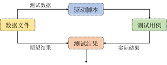
图4 数据驱动框架原理
3.1.3 关键字驱动框架
关键字驱动框架（Keyword-driven Framework）[8]是数据驱动框架地改进和补充，基本原理是在脚本与数据分离之后，将脚本二次分离，形成所谓的行为代码与测试代码，然后经由数据文件驱动行为代码，从而生成测试代码。关键字驱动需要我们根据测试用例定义关键字，并使其与相应的动作或方法关联起来。而这里的关键字主要有三类: 被操作对象(item)、操作(operation)和值(value)，面向对象的形式表现为 item.operation(value) 。
关键字驱动框架地实现方法类似于积木，对页面元素进行拆分和组装，最小颗粒度的操作可以视为一个关键字，可以直接使用，也可以将几个关键字组装成为一个大关键字，像搭积木一样搭建自动化测试，如图 5 所示。
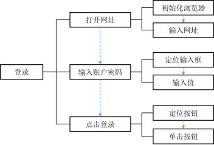
图5 关键字驱动-登录示例
3.1.4 混合驱动的PO设计模式
综合上述几种测试框架，在数据驱动和关键字驱动的基础上，我们引入 PO（Page Object）设计模式[9]来实现最终的 UI 自动化测试框架。该框架采用模块化设计，实现页面元素与业务逻辑的分离、测试数据与测试脚本的分离，使得测试脚本更加易读、易维护和易于拓展，降低代码耦合性，可有效提高测试效率和质量。
PO 模式的核心思想是分层，如图6所示。对象库层封装基础方法，如 Selenium 的原生 api、日志、文件读写等方法；页面操作层定义关键字，如 DOM[10]树中元素的定位、获取、操作等；测试用例层则根据业务逻辑调用一个或多个关键字组合成测试用例，并在该层设置测试执行入口。
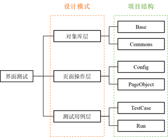
图6 PO模式分层及项目结构
PO 模式的理念是将待测页面当作一个页面对象，包含页面元素的定位和元素操作，以此实现页面对象和真实页面的映射关系。
测试用例如表 1 所示，测试结果判断流程如图7所示。在执行过程中，如果发生预期之外的脚本代码错误，则抛出异常并结束测试；若正常执行，则依次判断断言是否成功以及实际结果是否符合预期，若全部符合则代表测试通过，若不符合则测试不通过，执行完指定的全部测试用例后，将测试结果写入日志，并生成 Allure 测试报告。测试报告如图 8 所示。
1 |
|
表1 UI 测试用例实例
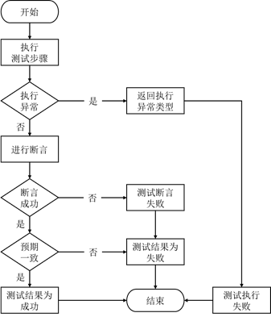
图7 测试结果判断流程图
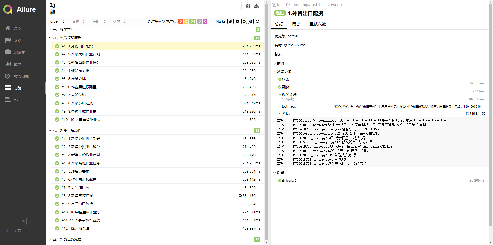
图8 测试报告
3.2 接口测试
3.2.1 基于SqlAlchemy的数据库校验方案
对于业务接口测试，我们往往会校验接口传参是否正确，接口是否请求成功以及请求结果是否符合预期。
如果要验证某个接口的执行结果或者返回结果是否正确，首先我们会想到校验请求的状态码，通常 200 代表请求正常、401 代表认证失败、500 代表后端错误等等；但是 200 仅代表没有报错，无法保证业务逻辑的正确性，500 也不代表服务异常，它可能是后端进行的错误处理。为了更精确地判断接口是否按照预期执行，可以通过响应体中的 data 部分进行字段的正确性校验。然而不是所有接口都会返回 data，确切地说，可能返回的只是“data=true”，我们无法得知数据处理是否正确。进一步，我们可以通过编写 sql 语句来应对接口不返回业务数据的情况：
- 对于一个 GET 请求，我们希望验证响应结果的数据量或者某条数据的正确性；
- 对于一个 POST 新增请求，我们希望验证写入数据库的真实数据的正确性、是否存在漏写等问题；
- 对于一个 PUT/POST 修改请求，我们希望验证修改的数据在数据库中是否正确变更；
- 对于一个 DELETE/POST 删除请求，我们希望验证某条数据是否真正在数据库中被抹除，或是由于修改状态标记而被隐藏。
接口自动化测试的流程如图 9 所示。一般情况下，我们使用参数化的手段生成测试用例，对接口进行三步校验。首先校验状态码，验证接口是否请求成功；然后验证响应体中的数据；最后验证数据库的更改，全部通过才能说明接口的功能正常。
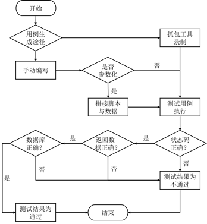
图9 接口自动化测试流程
考虑到实际应用，如果需要编写大量 sql 语句，且研发迭代的过程中数据库表结构会发生更改，随着自动化用例的规模增长，我们将陷入维护的泥沼。SqlAlchemy 是一种可以实时跟进数据库表变动，甚至允许不同类型数据库之间进行迁移，且容易维护的技术，它可以有效提升编写和维护 sql 语句的效率。表 2 是一个接口测试用例的示例：
1 |
|
表2 接口测试用例示例
3.2.2 基于组合唯一键的数据验证方案
业务报表对应的查询接口，也即涉及数据统计的接口，通常具有复杂的统计逻辑，在大量数据中我们无法轻易得知正确的返回结果，因此普通的验证方法很难奏效。但是报表都会有标准的统计口径，比如以航次为单位统计，按照内外贸区分，展示哪些字段等等。在充分了解报表需求的前提下，我们可以自行编写 sql 查询语句进行统计，然后与接口的返回结果比对。
数据统计接口的返回体是 Json 结构，结构体一般包含大量同样结构的数据，我们选取其中部分字段作为组合唯一键，确保这个组合在结构体中必然出现且只出现一次。同样地，测试人员编写的 sql 语句也要遵循该组合的唯一性原则。最终，在测试框架内，我们调用数据应用层的数据统计 API，同时连接数据仓库的数据引入层（ODS）执行测试 sql 语句，将二者结果转换为同一格式，再用组合唯一键在两个结构体中进行匹配，校验数据量是否相同，以及唯一键之外的字段是否正确。该方案的整体结构如图 10 所示。
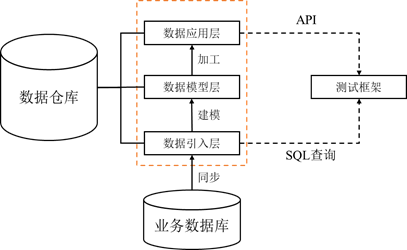
图10 数据仓库验证方案
4 持续集成与持续测试
随着敏捷模式下软件研发的迭代周期越来越短，持续测试（CT）越来越重要。我们需要持续不间断地对保障软件产品质量，靠人力是行不通的，因此必须构建无人值守的自动化测试运行机制。持续测试的前提是持续集成（CI）[11]，即开发人员每次提交代码，对整个系统自动构建，并对其执行全面的自动化测试，根据构建和测试结果确定新代码是否正确集成。自动化测试的持续集成流程如图 11 所示。
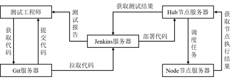
图11 持续集成流程图
完成初步测试后，开发人员将集成后的代码部署到类生产环境，确保可以可持续的方式快速向客户发布新版本，这被称为持续交付（CDE）。
在持续集成和持续交付的阶段中，开发人员需要进行单元测试（UT），测试团队可以依次进行低等级测试（LLT）、高等级测试（HLT）及系统测试。如图 12 所示。
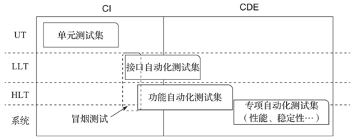
图12 持续测试流程图
5 总结与展望
5.1 成果总结
我们已经完成界面测试和接口测试的框架研发，并且应用到集装箱系统和散件杂货系统的脚本开发，目前运行稳定。在此基础上，实现了基于 TFS 代码管理平台和 Jenkins 服务器的自动化测试持续集成，如图 13 所示。我们可以根据项目需求设定无人值守的测试模式，可指定测试范围并在测试结束后统一查看运行日志和可视化的测试报告。
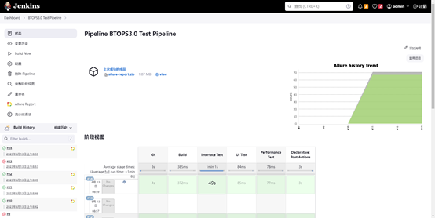
图13 Jenkins流水线示例
作为对比，不同手段完成一套完整业务流程和各种数据项校验所需的时间成本如表3所示。
| 测试方式 | 用时估算 |
|---|---|
| UI手工测试 | >40min |
| UI自动化测试 | 5min ~ 15min |
| 接口自动化测试 | <5min |
表3 手工测试与自动化测试用时对比
随着前后端开发规范的逐渐统一，我们的测试框架需要持续维护、调优，逐步提高自动化测试在测试工作中的比重，争取各项目团队对自动化测试的支持和信任。
5.2 未来计划
5.2.1 兼容性测试
随着系统架构从 C/S 全面转向 B/S，同时在国产化适配的背景下，软件系统对于操作系统和浏览器的兼容性测试愈发重要。传统的兼容性测试需要测试人员在每套环境下做重复的功能测试，这样做显然性价比过低，因此我们往往忽略兼容性测试。为解决这一问题，我们设想基于 Docker 容器部署 Selenium-grid 服务来做分布式测试。
Selenium-grid 提供一种在多台机器上并行运行测试的简单方法，通过将客户端发送的命令路由到远程浏览器实例，在远程机器上执行 Webdriver 脚本。其运行机制如图14所示，它允许我们启动跨平台的不同浏览器版本上的测试。
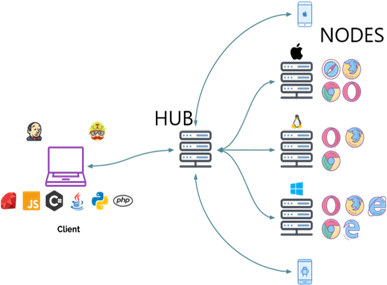
图14 Selenium-grid架构
5.2.2 移动端测试
除了 Web 端的后台系统，各项目通常配套开发手持机 App，它们在版本稳定之后同样需要自动化测试。我们计划采用 Appium 的技术路线，在主机上安装 Appium 客户端和服务器，提供 Appium 服务，并监听端口，发送指令到移动设备，移动设备执行自动化操作。目前已完成环境配置，预备进行框架研发。大致运行机制如图 15 所示。
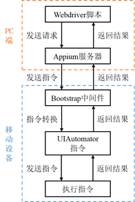
图15 移动端自动化测试机制
6 参考文献
[1] 朱少民. 软件测试方法和技术[M]. 第二版.北京: 清华出版社, 2012:5-6.
[2] Dorthy Graham,Mark Fewster.Experiences of Test Automation[M]. Boston:Addison-Wesley Education Publishers.
[3] Cohn M .Succeeding with Agile: Software Development Using Scrum[J].Addison-Wesley Professional, 2010.
[4] Crispin L , Gregory J .Agile Testing: A Practical Guide for Testers and Agile Teams[J].pearson schweiz ag, 2009. Gregory J.Agile Testing: A Practical Guide for Testers and Agile Teams[M].Addison-Wesley,2009.
[5] 李玮.软件自动化测试混合框架的研究与实现[D].北京交通大学,2007.DOI:CNKI:CDMD:2.2007.048355.
[6] Wu Y , Offutt J .Modeling and Testing Web-based Applications[J].george mason university, 2002.DOI:10.1021/bk-2007-0970.ch012.
[7] 朱菊,王志坚,杨雪.基于数据驱动的软件自动化测试框架[J].计算机技术与发展, 2006, 16(5):3.DOI:CNKI:SUN:WJFZ.0.2006-05-023.
[8] 接卉,兰雨晴,骆沛.一种关键字驱动的自动化测试框架[J].计算机应用研究, 2009(3):3.DOI:10.3969/j.issn.1001-3695.2009.03.039.
[9] Yu B , Ma L , Zhang C .Incremental Web Application Testing Using Page Object[C]//IEEE Workshop on Hot Topics in Web Systems & Technologies.IEEE Computer Society, 2015.DOI:10.1109/HotWeb.2015.14.
[10] Hors A L , Wood L , Nicol G ,et al.Document Object Model (DOM) Level 2 HTML Specification[J]. 2004.DOI:10.1016/0963-8695(92)90491-X.
[11] 陶镇威.基于Jenkins的持续集成研究与应用[D].华南理工大学[2023-10-05].DOI:CNKI:CDMD:2.1013.150629.